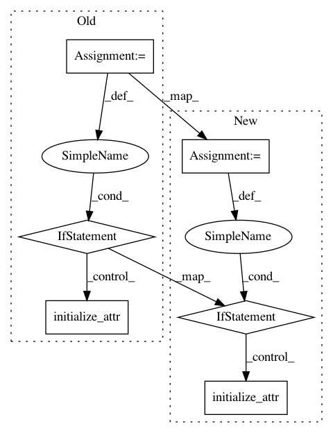

5bdc1f679a9852763f9a778c7b0e21639fb044a6,spynnaker/pyNN/models/neuron/abstract_population_vertex.py,AbstractPopulationVertex,initialize,#AbstractPopulationVertex#Any#Any#,638
Before Change
@overrides(AbstractPopulationInitializable.initialize)
def initialize(self, variable, value):
initialize_attr = getattr(
self._neuron_model, "initialize_%s" % variable, None)
if initialize_attr is None or not callable(initialize_attr):
raise Exception("Vertex does not support initialisation of"
" parameter {}".format(variable))
initialize_attr(value)
self._change_requires_neuron_parameters_reload = True
@property
def input_type(self):
After Change
if isinstance(self._neuron_model, AbstractRangedData):
self._neuron_model.initialize(variable, value)
else:
initialize_attr = getattr(
self._neuron_model, "initialize_%s" % variable, None)
if initialize_attr is None or not callable(initialize_attr):
raise Exception("Vertex does not support initialisation of"
" parameter {}".format(variable))
value_list = utility_calls.convert_param_to_numpy(value, self.n_atoms)
initialize_attr(value_list)
self._change_requires_neuron_parameters_reload = True
@property
def input_type(self):
In pattern: SUPERPATTERN
Frequency: 4
Non-data size: 6
Instances
Project Name: SpiNNakerManchester/sPyNNaker
Commit Name: 5bdc1f679a9852763f9a778c7b0e21639fb044a6
Time: 2017-11-21
Author: christian.brenninkmeijer@manchester.ac.uk
File Name: spynnaker/pyNN/models/neuron/abstract_population_vertex.py
Class Name: AbstractPopulationVertex
Method Name: initialize
Project Name: SpiNNakerManchester/sPyNNaker
Commit Name: 3c3521dfa7826fbe06f1a7a6e109448386383b66
Time: 2017-11-22
Author: christian.brenninkmeijer@manchester.ac.uk
File Name: spynnaker/pyNN/models/neuron/abstract_population_vertex.py
Class Name: AbstractPopulationVertex
Method Name: initialize
Project Name: SpiNNakerManchester/sPyNNaker
Commit Name: de21609b9deeb6b4fb29dccef2e7663a085872fb
Time: 2017-11-22
Author: christian.brenninkmeijer@manchester.ac.uk
File Name: spynnaker/pyNN/models/neuron/abstract_population_vertex.py
Class Name: AbstractPopulationVertex
Method Name: initialize
Project Name: SpiNNakerManchester/sPyNNaker
Commit Name: 54b309d4083cb1fa2fa22191a021d89a591527cf
Time: 2017-11-22
Author: christian.brenninkmeijer@manchester.ac.uk
File Name: spynnaker/pyNN/models/neuron/abstract_population_vertex.py
Class Name: AbstractPopulationVertex
Method Name: initialize